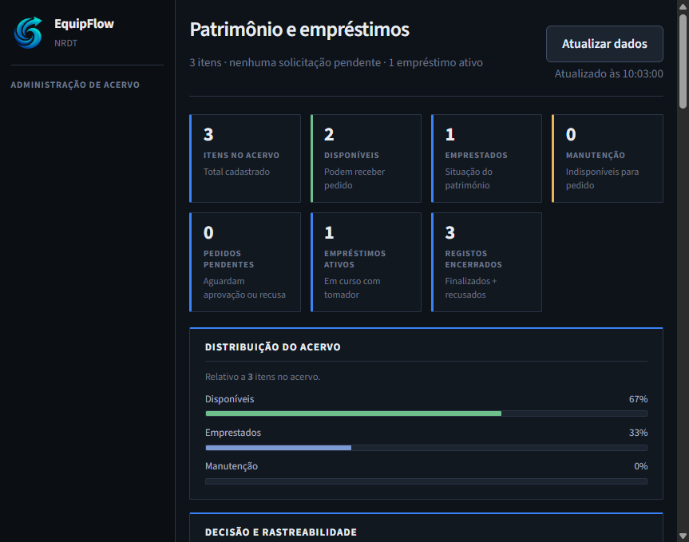
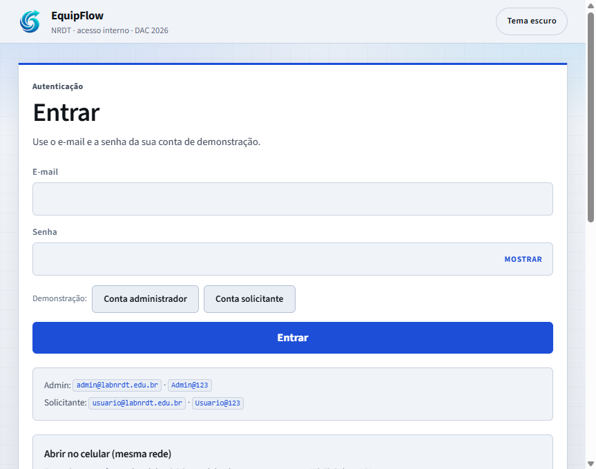
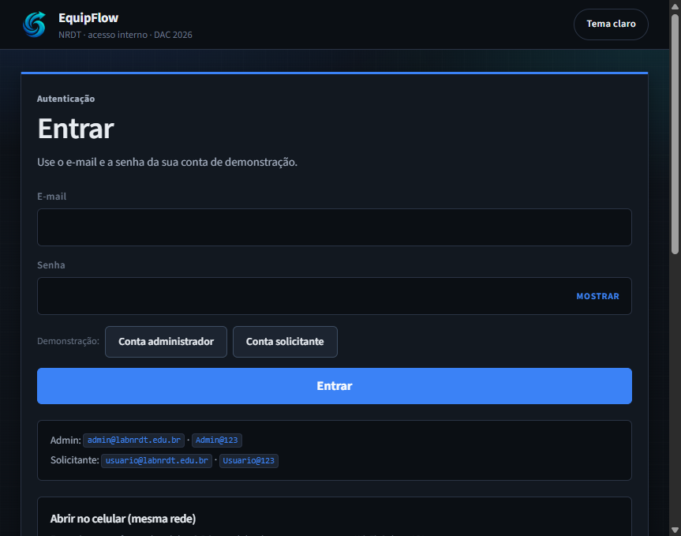
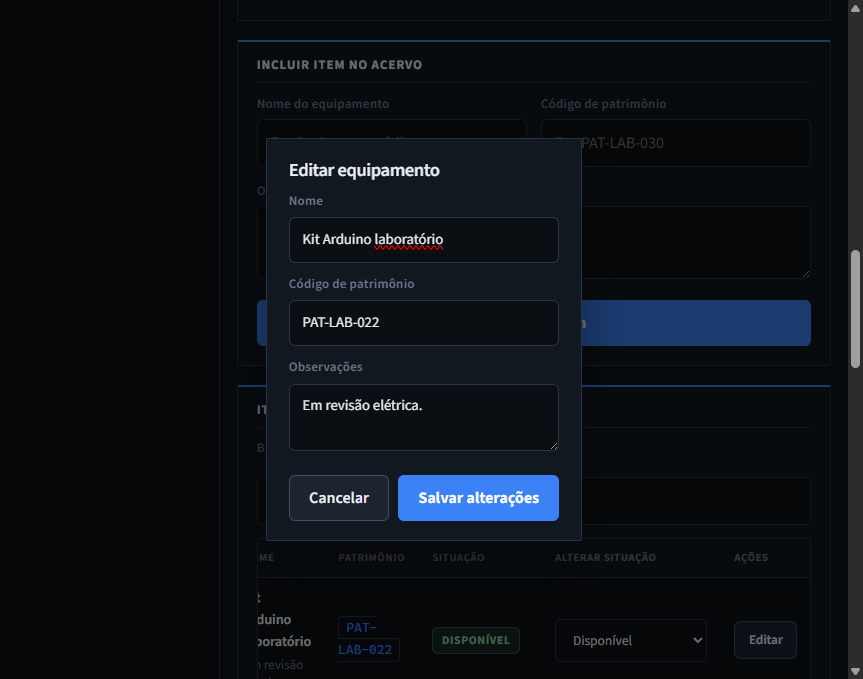
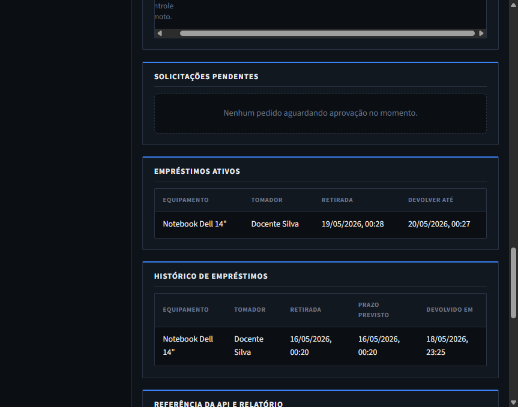
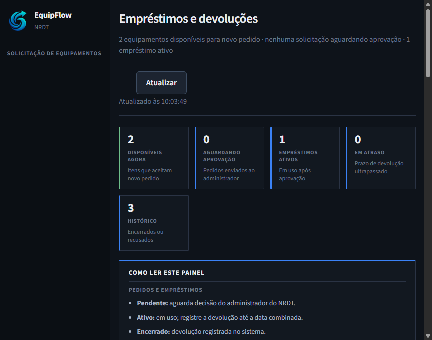
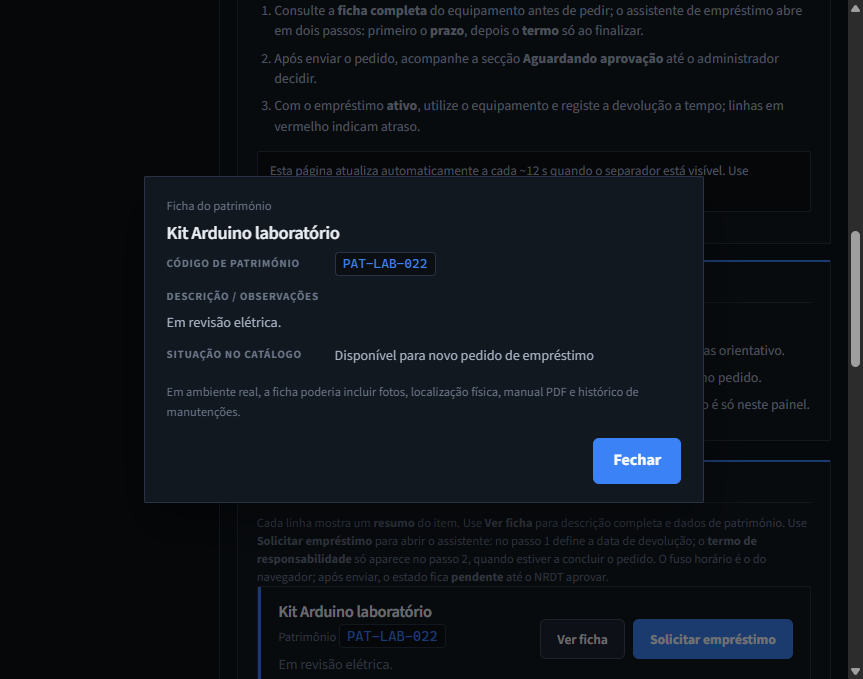
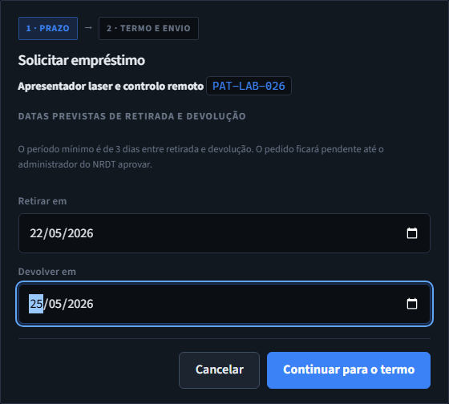
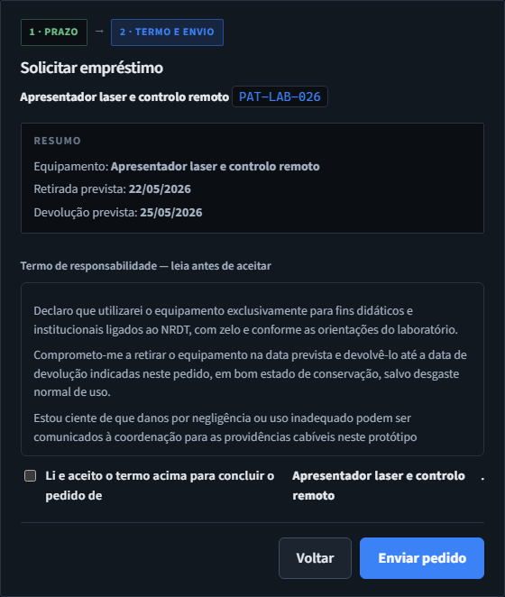
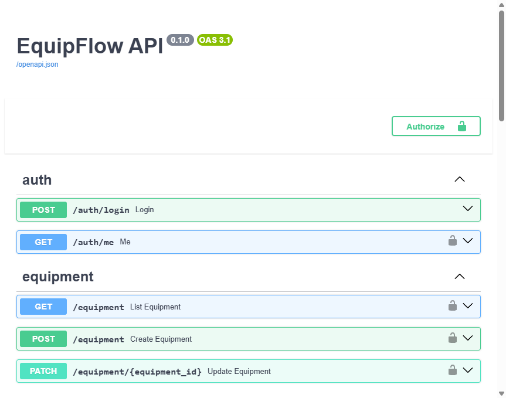

Plataforma web full stack desenvolvida para centralizar o fluxo de empréstimo e devolução de equipamentos do NRDT. O projeto integra front-end moderno, API REST, autenticação JWT e rastreabilidade operacional em uma experiência tecnológica, minimalista e acessível.
Arquitetura moderna
Autenticação segura
Persistência relacional
FastAPI + Swagger

O EquipFlow é um protótipo web full stack desenvolvido para controlar o fluxo de empréstimo e devolução de equipamentos didáticos do cenário fictício NRDT (Núcleo de Recursos Didáticos em Tecnologia). O projeto foi criado no contexto do DAC 2026 do curso de TADS da UCDB, com foco em organização, rastreabilidade, acessibilidade e eficiência operacional.
A proposta surgiu para solucionar problemas comuns em laboratórios e núcleos de recursos compartilhados, onde o controle normalmente depende de planilhas, formulários em papel ou mensagens informais. Esse modelo dificulta a rastreabilidade dos equipamentos, gera conflitos de uso, aumenta o retrabalho administrativo e reduz a visibilidade do acervo disponível.
O EquipFlow centraliza todas essas informações em uma única plataforma acessível pelo navegador, permitindo acompanhar o ciclo completo de solicitação, aprovação, empréstimo e devolução dos equipamentos.
No cenário do NRDT, o controle de equipamentos dependia de planilhas descentralizadas, formulários físicos e comunicação informal. Isso dificultava a rastreabilidade dos itens, aumentava o retrabalho administrativo e reduzia a visibilidade do acervo disponível.
Dificuldade para identificar quem retirou um equipamento e qual o prazo de devolução.
Dois usuários podiam solicitar o mesmo equipamento simultaneamente.
Conferências manuais consumiam tempo e dificultavam auditorias do patrimônio.
O EquipFlow foi desenvolvido como um protótipo acadêmico full stack para solucionar problemas comuns na gestão de equipamentos didáticos. O sistema substitui planilhas descentralizadas, formulários físicos e mensagens informais por uma plataforma web única, acessível via navegador e preparada para rastreabilidade completa.
Controle de acesso com JWT e separação entre administrador e solicitante.
Cadastro, edição e alteração da situação dos equipamentos em tempo real.
Solicitação, aprovação, empréstimo e devolução registrados em histórico.
Swagger/OpenAPI integrado para testes e demonstração da camada REST.
Cada captura demonstra uma etapa do ciclo operacional do EquipFlow, desde autenticação até gerenciamento de empréstimos e documentação da API.

Tela inicial do sistema com autenticação, preenchimento rápido de contas demo e alternância de tema.

Interface em modo escuro persistida no navegador com foco em acessibilidade visual.
Visão estratégica do acervo, pipeline de pedidos e gerenciamento operacional do NRDT.

Modal para alteração de patrimônio sem perda do histórico de empréstimos vinculados.

Controle completo de solicitações pendentes, ativos e histórico operacional.

Área do usuário para acompanhamento de pedidos, empréstimos e histórico pessoal.

Informações detalhadas do patrimônio antes da solicitação de empréstimo.

Seleção das datas de retirada e devolução com validação mínima de 3 dias.

Leitura e aceite do termo de responsabilidade para envio do pedido.

Documentação automática da API REST desenvolvida com FastAPI.
O principal objetivo do projeto é oferecer uma plataforma web funcional para gerenciamento de patrimônio didático, permitindo cadastro de equipamentos, controle de disponibilidade, solicitação formal de empréstimos, aprovação administrativa e registro de devoluções.
Cadastro, edição e controle completo do patrimônio didático.
Solicitação, aprovação, devolução e histórico rastreável.
Indicadores operacionais e monitoramento do acervo.
Aplicação prática de APIs REST, autenticação JWT e banco de dados.
Responsável pelo gerenciamento do patrimônio do NRDT. Pode cadastrar equipamentos, editar informações, alterar status, aprovar ou recusar solicitações e acompanhar empréstimos ativos.
Representa docentes ou estudantes autorizados. Pode consultar o catálogo, visualizar fichas dos equipamentos, solicitar empréstimos e acompanhar o status dos pedidos.
O sistema segue um fluxo simples e organizado para garantir rastreabilidade completa das operações.
O usuário seleciona um equipamento disponível e define as datas de retirada e devolução.
O sistema aplica validações de prazo e exige aceite do termo de responsabilidade.
O administrador aprova ou recusa a solicitação conforme disponibilidade do patrimônio.
Após a devolução, o item retorna ao catálogo disponível e permanece registrado no histórico.
O EquipFlow utiliza arquitetura desacoplada baseada em API REST. O front-end em React consome endpoints protegidos por JWT desenvolvidos em FastAPI, garantindo organização, escalabilidade e integração entre cliente e servidor.
Interface desenvolvida em React 19 com TypeScript e Vite, utilizando componentes reutilizáveis, layout responsivo e experiência moderna.
API construída em FastAPI responsável pela autenticação, regras de negócio, controle de empréstimos e persistência dos dados.
SQLite com SQLAlchemy para modelagem relacional de usuários, equipamentos e empréstimos.
Sistema baseado em JWT com senhas criptografadas utilizando bcrypt, garantindo controle de acesso seguro por perfil.
A interface do EquipFlow foi projetada para oferecer clareza visual, facilidade de navegação e uma experiência moderna para administradores e solicitantes.
Experiência visual adaptável para diferentes ambientes de uso.
Compatibilidade com computadores, tablets e dispositivos móveis.
Contraste adequado, labels descritivos e foco em inclusão digital.
Indicadores, gráficos e estados visuais para facilitar a operação.
O EquipFlow utiliza tecnologias modernas focadas em desempenho, escalabilidade, documentação automática e integração entre front-end e back-end.
O EquipFlow demonstra como tecnologias web modernas podem ser utilizadas para resolver problemas reais de organização e controle de patrimônio em ambientes acadêmicos.
Além de servir como projeto prático para aplicação dos conteúdos estudados em TADS, o sistema evidencia conceitos importantes de desenvolvimento full stack, APIs REST, autenticação segura, modelagem de banco de dados, experiência do usuário e integração entre sistemas.
O projeto possui caráter exclusivamente acadêmico e utiliza dados fictícios para fins educacionais e de apresentação.
O EquipFlow demonstra como tecnologias web modernas podem ser aplicadas na resolução de problemas reais relacionados ao controle de patrimônio e empréstimos acadêmicos.
O projeto integra conceitos de desenvolvimento full stack, APIs REST, autenticação segura, banco de dados relacional, experiência do usuário e acessibilidade digital em uma única solução.
Desenvolvido como projeto acadêmico do curso de TADS da UCDB, o sistema utiliza dados fictícios exclusivamente para fins educacionais e de apresentação.